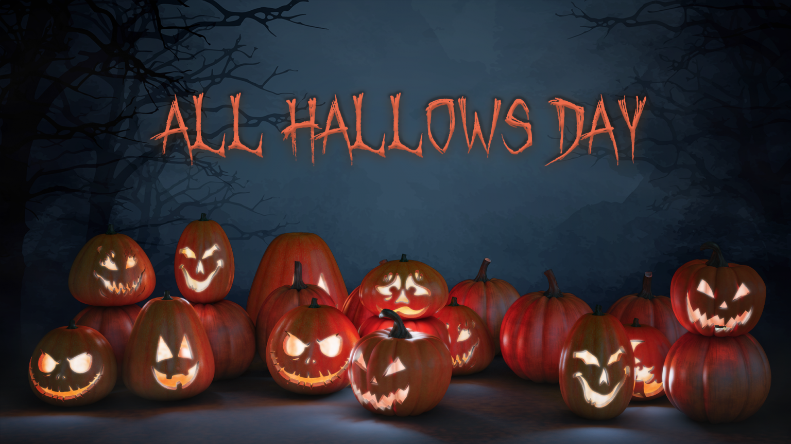
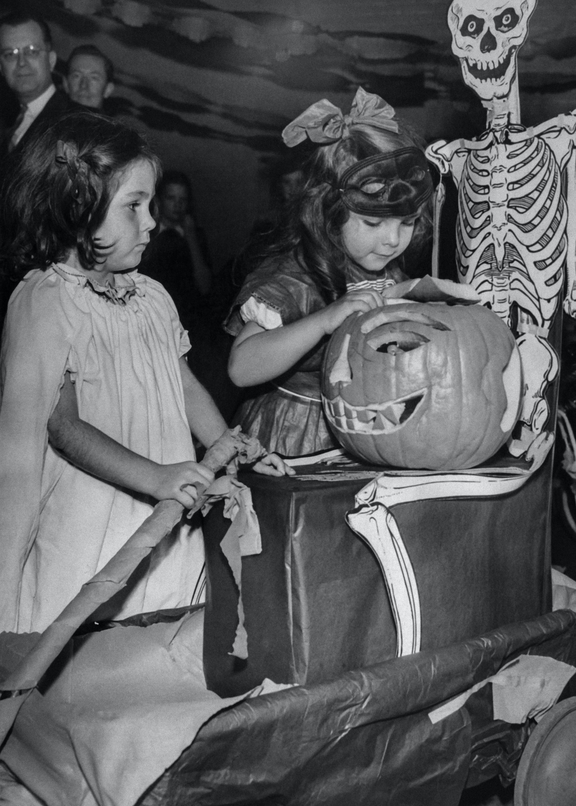
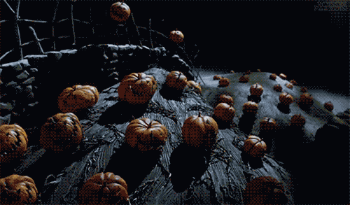
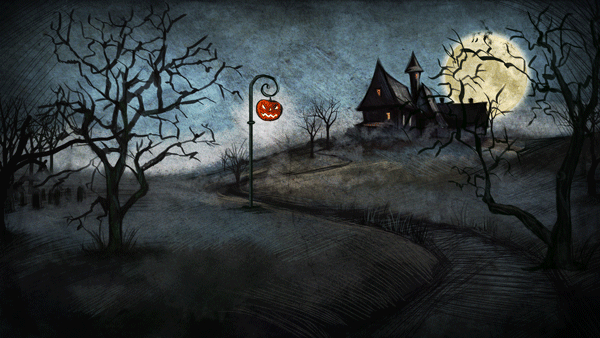
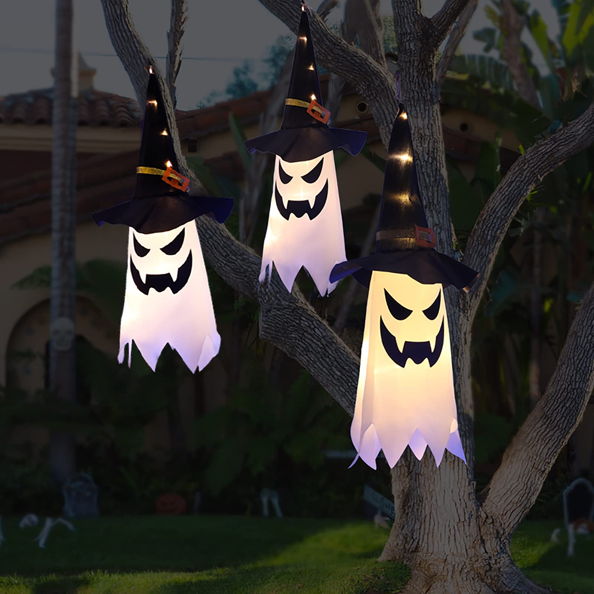
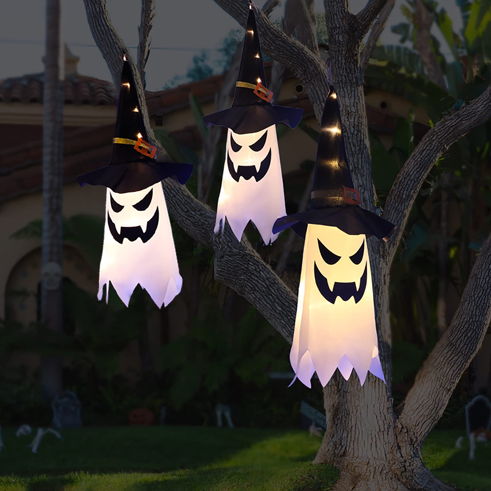
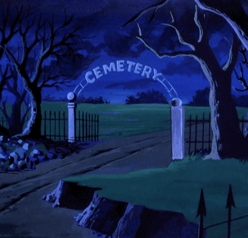

Happy Halloween!
A curiosa origem do Dia das Bruxas!
Como surgiu o nome "Halloween"?
É celebrado no dia 31 de outubro, principalmente nos Estados Unidos, mas, hoje em dia, comemorado em diversos outros países, inclusive no Brasil. Hábitos como o de crianças se fantasiarem para sair de porta em porta atrás de doces, ou de espalhar pela casa enfeites e adereços "assustadores" como abóboras esculpidas e iluminadas, ou de participar de festas a fantasia, são cada vez mais populares. No entanto, sua origem pouco tem a ver com o significado moderno que essa festa adquiriu.
O Halloween tem suas raízes não na cultura americana, mas no Reino Unido. Seu nome deriva de "All Hallows' Eve". "Hallow" é um termo antigo para "santo", e "eve" é o mesmo que "véspera". O termo designava, até o século 16, a noite anterior ao Dia de Todos os Santos, celebrado em 1º de novembro. Mas uma coisa é a etimologia de seu nome, outra completamente diferente é a origem do Halloween moderno.
Como esta festa começou?
Desde o século 18, historiadores apontam para um antigo festival pagão ao falar da origem do Halloween: o festival celta de Samhain (termo que significa "fim do verão").
O Samhain durava três dias e começava em 31 de outubro. Segundo acadêmicos, era uma homenagem ao "Rei dos mortos". Estudos recentes destacam que o Samhain tinha entre suas maiores marcas a fogueira e celebrava a abundância de comida após a época de colheita. O problema com essa teoria é que ela se baseia em poucas evidências além da época do ano em que os festivais eram realizados. A comemoração, a linguagem e o significado do festival de outubro mudavam conforme a região.
Os galeses celebravam, por exemplo, o "Calan Gaeaf". Há pontos em comum entre esse festival realizado no País de Gales e o Samhain, celebração predominantemente irlandesa e escocesa, mas há muitas diferenças também.
Em meados do século 8, o papa Gregório 3º mudou a data do Dia de Todos os Santos de 13 de maio - a data do festival romano dos mortos - para 1º de novembro, a data do Samhain.
Não se tem certeza se Gregório 3º ou seu sucessor, Gregório 4º, tornaram a celebração do Dia de Todos os Santos obrigatória na tentativa de "cristianizar" o Samhain.
Mas, quaisquer que fossem seus motivos, a nova data para esse dia fez com que a celebração cristã dos santos e a do Samhain fossem unidas.
Assim, tradições pagãs e cristãs acabaram se misturando.
Quando surgiu o Dia das Bruxas?
O Dia das Bruxas, o Halloween, que conhecemos hoje tomou forma entre 1500 e 1800. Fogueiras tornaram-se especialmente populares nessa festa. Elas eram usadas na queima do joio (que celebrava o fim da colheita no Samhain), como símbolo do rumo a ser seguido pelas almas cristãs no purgatório ou para repelir a bruxaria e a peste negra. Outro costume de Halloween era o de prever o futuro - previa-se a data da morte de uma pessoa ou o nome de seu futuro marido ou mulher. Em seu poema Halloween, escrito em 1786, o escocês Robert Burns descreve as formas pelas quais uma pessoa jovem podia descobrir quem seria seu grande amor.
Muitos destes rituais de adivinhação envolviam a agricultura. Por exemplo, puxar uma couve ou um repolho do solo por acreditar que seu formato e sabor forneceriam pistas cruciais sobre a profissão e a personalidade do futuro cônjuge.
Outros incluíam pescar com a boca maçãs marcadas com as iniciais de diversos candidatos e "ler" cascas de noz ou olhar um espelho e pedir ao diabo para revelar a face da pessoa amada.
A comida era um componente importante do Halloween, assim como de muitos outros festivais.
Um dos hábitos mais característicos envolvia crianças, que iam de casa em casa cantando rimas ou entoando orações para as almas dos mortos. Em troca, elas recebiam bolos de boa sorte que representavam o espírito de uma pessoa que havia sido liberada do purgatório.
Durante o festival, as igrejas costumavam tocar seus sinos, às vezes por toda a noite. A prática era tão incômoda que o rei Henrique 3º e a rainha Elizabeth 1ª tentaram proibi-la, mas não conseguiram. Esse ritual prosseguiu, apesar das multas regularmente aplicadas a quem fizesse isso.
Como a festa chegou à América?
Em 1845, durante o período conhecido na Irlanda como a "Grande Fome", 1 milhão de pessoas foram forçadas a imigrar para os Estados Unidos, levando junto sua história e tradições.
Não é coincidência que as primeiras referências ao Halloween apareceram na América pouco depois disso. Em 1870, por exemplo, uma revista americana publicou uma reportagem em que o descrevia como feriado "inglês".
A princípio, as tradições do Dia das Bruxas nos Estados Unidos uniam brincadeiras comuns no Reino Unido rural com rituais de colheita americanos. As maçãs usadas para prever o futuro pelos britânicos viraram cidra, servida junto com rosquinhas, ou doughnuts em inglês.
O milho era um cultivo importante da agricultura americana — e acabou entrando com tudo na simbologia característica do Halloween americano.
Tanto que, no início do século 20, espantalhos — típicos de colheitas de milho — eram muito usados em decorações do Dia das Bruxas.
Foi nos EUA também que a abóbora passou a ser sinônimo de Halloween. No Reino Unido, o legume mais "entalhado" ou esculpido era o turnip, um tipo de nabo.
Uma lenda sobre um ferreiro chamado Jack que conseguiu ser mais esperto do que o diabo e vagava como um morto-vivo deu origem às luminárias feitas com abóboras que se tornaram o principal símbolo do Halloween americano.
A tradição moderna de "doces ou travessuras" também é americana. Há indícios disso em brincadeiras medievais que usavam repolhos, mas pregar peças tornou-se um hábito nessa época do ano entre os americanos a partir dos anos 1920.
As brincadeiras podiam acabar ficando violentas, como ocorreu durante a Grande Depressão, e se popularizaram de vez após a 2ª Guerra Mundial, quando o racionamento de alimentos acabou e doces podiam ser comprados facilmente.
Mas a tradição mais popular do Halloween, de usar fantasias e pregar sustos, não tem qualquer relação com os doces.
Ela veio após a transmissão pelo rádio, nos Estados Unidos, de uma adaptação do livro Guerra dos Mundos, do escritor inglês H.G. Wells, que gerou uma grande confusão quando foi ao ar, em 30 de outubro de 1938.
Ao concluí-la, o ator e diretor americano Orson Welles deixou de lado seu personagem para dizer aos ouvintes que tudo não passava de uma pegadinha de Halloween e comparou seu papel ao ato de se vestir com um lençol para imitar um fantasma e dar um susto nas pessoas. Mas a esta altura, muitos já pensavam que, assim como no livro, a terra estava realmente sendo invadida por marcianos.
O Halloween Moderno!
 

A porta de entrada no Brasil foram as escolas de idiomas, que importaram as lendas, as brincadeiras e as fantasias. A festa foi bem aceita e já é fácil encontrar roupas e decoração típicas para o mês de outubro.
A proximidade com o início de novembro, quando diversos países homenageiam os mortos, faz com que em muitos lugares o Halloween se misture a outras tradições.
Em sua "era moderna", o Halloween continuou a criar sua própria mitologia.
Em 1964, uma dona de casa de Nova York chamada Helen Pfeil decidiu distribuir palha de aço, biscoito para cachorro e inseticida contra formigas para crianças que ela considerava velhas demais para brincar de "doces ou travessuras". Logo, espalharam-se lendas urbanas de maçãs recheadas com lâminas de barbear e doces embebidos em arsênico ou drogas alucinógenas.
Atualmente, o festival conserva pouco de sua origem, mas, apesar de ter ganhado nova roupagem, dá oportunidade para que adultos brinquem com seus medos e fantasias.
Ele permite subverter normais sociais como evitar contato com estranhos ou explorar o lado sombrio do comportamento humano. Une religião, natureza, morte e romance. Talvez seja esse o motivo de sua grande popularidade.
Conto sombrio de Halloween
Um grupo de jovens decidiu fazer algo inusitado no Halloween: organizar uma festa em um cemitério antigo da cidade. Decoraram o local com velas e fantasias assustadoras, criando uma atmosfera de arrepiar. À medida que a noite avançava, eles começaram a contar histórias de fantasmas e lendas urbanas. Enquanto riam e se divertiam, algo estranho aconteceu.
A terra sob os seus pés começou a tremer, e túmulos antigos se abriram. Do chão, emergiram figuras vestidas com roupas antigas e pálidas como a lua. Os jovens entraram em pânico. Correram para o portão de entrada e quando chegaram lá descobriram que não poderiam sair, pois estava trancado. De repente, um dos jovens sentiu uma mão gélida apoiar-se em seu ombro e em seguida… um grito angustiante ocupou o ar. Foi aí que vc acordou!!! Essa foi por pouco em!?
Para um aprofundamento no misterioso dia de Halloween, visite happyHalloween.com